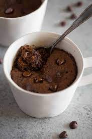

Delicious Mugcake

This is my own version of the chocolate microwave mug cake. This chocolaty
fudgy treat is truly decadent and great for nights when I need a yummy
dessert that is ready in less than 10 minutes! Chocolate chips make this
recipe even better.
Ingredients
- ¼ cup all-purpose flour
- ¼ cup white sugar
- ⅛ teaspoon salt
- 3 tablespoons milk
- 2 tablespoons unsweetened cocoa powder
- ⅛ teaspoon baking soda
- 2 tablespoons canola oil
- 1 tablespoon water
- ¼ teaspoon vanilla extract
Instructions
-
Mix flour, sugar, cocoa powder, baking soda, and salt in a large
microwave-safe mug; stir in milk, canola oil, water, and vanilla
extract.
-
Cook in microwave until cake is done in the middle, about 1 minute 45
seconds.
Return to top
Return to main page